24 Januari 2026
Perjumpaan AY, Adventurer & Pathfinder Pertama
Pertemuan pertama tahun 2026 yang menghimpunkan Adventist Youth, Adventurer dan Pathfinder bagi perancangan serta pengukuhan rohani.
Tempat: Dewan Belia
Masa: 3.00 Petang
Kehadiran: 22 orang
Ulasan Kehadiran
Kehadiran amat memberangsangkan. Beberapa ibu bapa turut hadir bagi memberikan sokongan kepada anak-anak serta menyokong aktiviti AY yang dijalankan.
Aktiviti
Para peserta telah dibahagikan kepada tiga kumpulan yang terdiri daripada Adventurer, Pathfinder, MIT dan MG. Aktiviti ini bertujuan untuk mengenal pasti minat para belia Gereja SDA Koporingan serta mengumpul cadangan aktiviti dan sasaran sepanjang tahun 2026.
07 Februari 2026
Induction Night
Majlis malam induksi komitmen pelayanan Tahun 2026 bagi barisan Adventurer, Pathfinder, MIT & MG.


 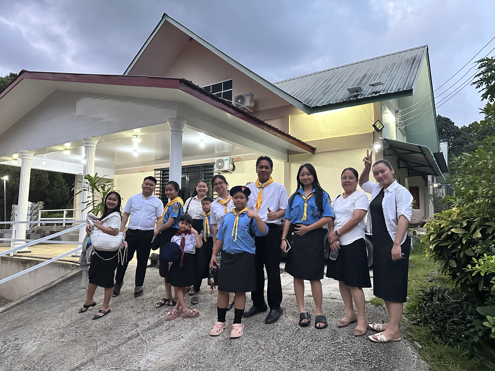
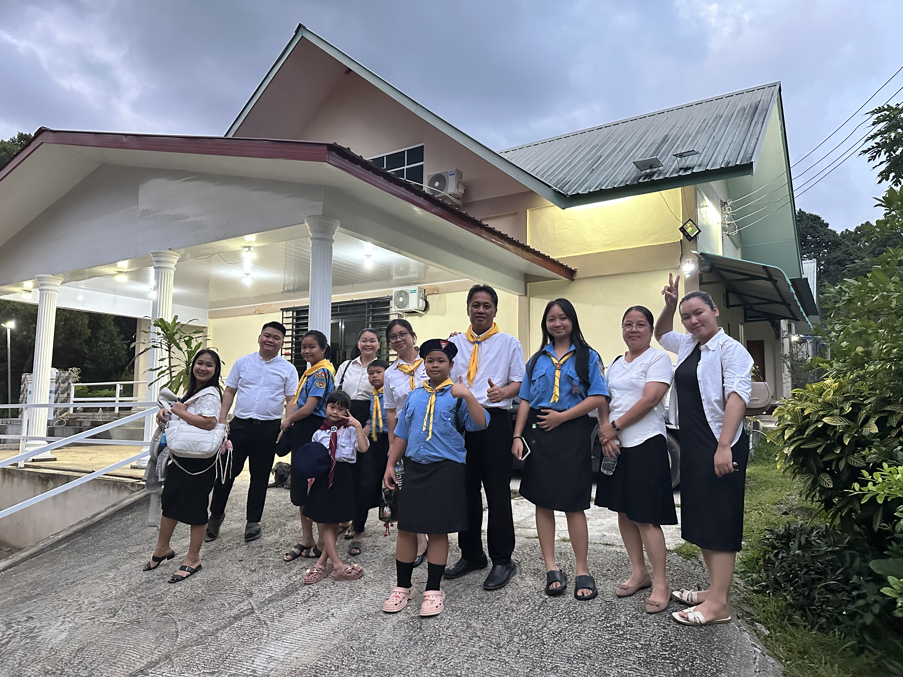


08 Februari 2026
Orientasi Kurikulum MIT
Sesi orientasi dan persediaan kepimpinan Master Guide in Training (MIT).
15 Februari 2026
Meeting Pertama Jabatan Belia Daerah Kapa
Perjumpaan penyelarasan hala tuju pelayanan belia di peringkat daerah.
21 Februari 2026
Perjumpaan AY – Aktiviti Belia
Perjumpaan Adventist Youth yang diisi dengan pelbagai aktiviti bagi memperkukuhkan kesatuan dan pertumbuhan rohani belia.
Tempat: Dewan Belia
Masa: 3.00 Petang
Kehadiran: 30 orang
Ulasan Kehadiran
Kehadiran menunjukkan peningkatan dengan pertambahan ahli baharu serta sokongan berterusan daripada ibu bapa dan keluarga. Ucapan terima kasih juga dirakamkan kepada veteran MG Clifton dan MG Jossy yang turut hadir memberikan sokongan.
Aktiviti
Aktiviti Mengenal Karakter dalam Alkitab telah dijalankan. Ahli dibahagikan kepada dua kumpulan. Setiap kumpulan memilih dua orang wakil untuk meneka mesej tanpa menggunakan kata-kata, hanya melalui gerak isyarat dan lakonan.
Ulasan Akhir
Aktiviti berjaya menyampaikan mesej dan objektif pertemuan. Belia memahami bahawa perbuatan dan tindakan mencerminkan siapa diri kita, bukan hanya kata-kata.


22 Februari 2026
Progressive Class
Perjumpaan Adventurer & Pathfinder merangkumi pengenalan lagu, ikrar dan kelas berperingkat (progressive class).
 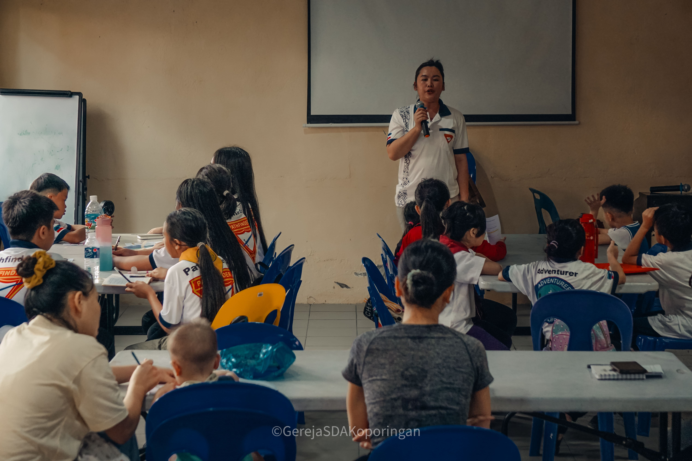
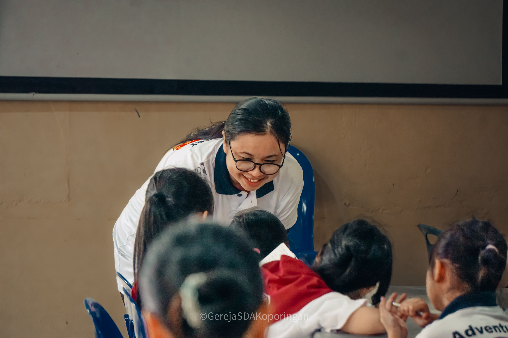
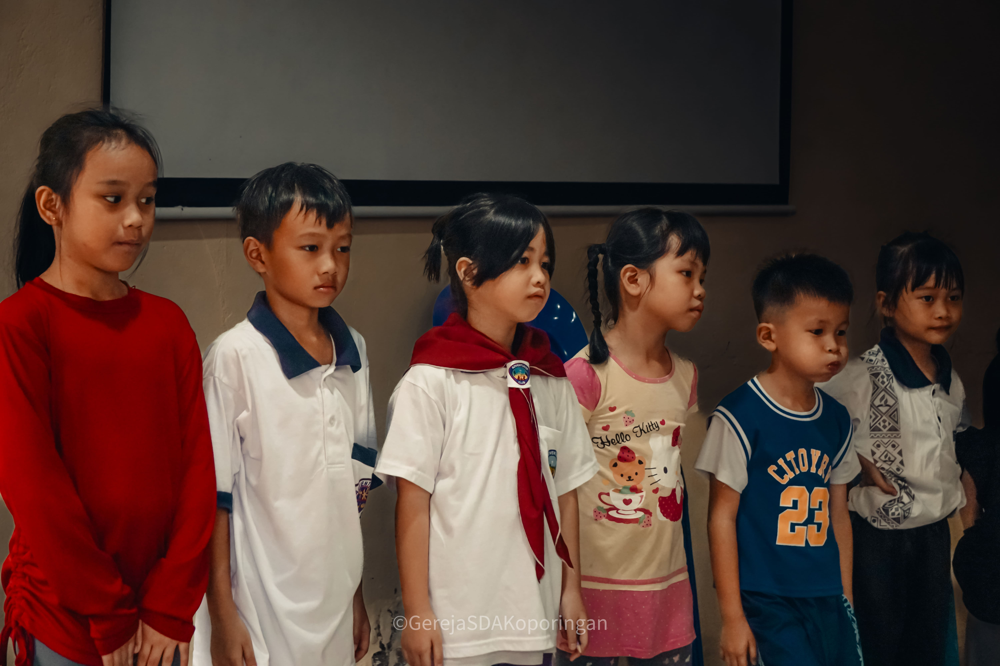
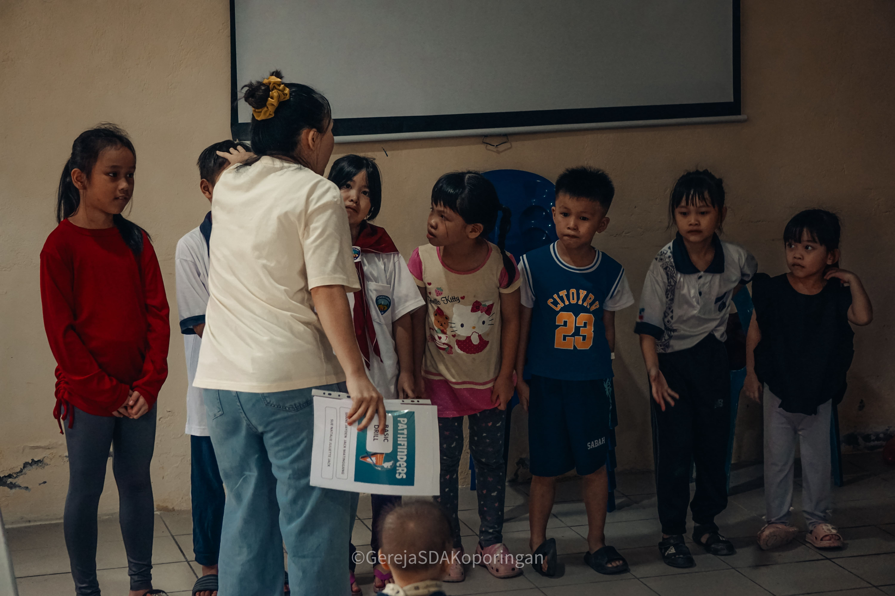
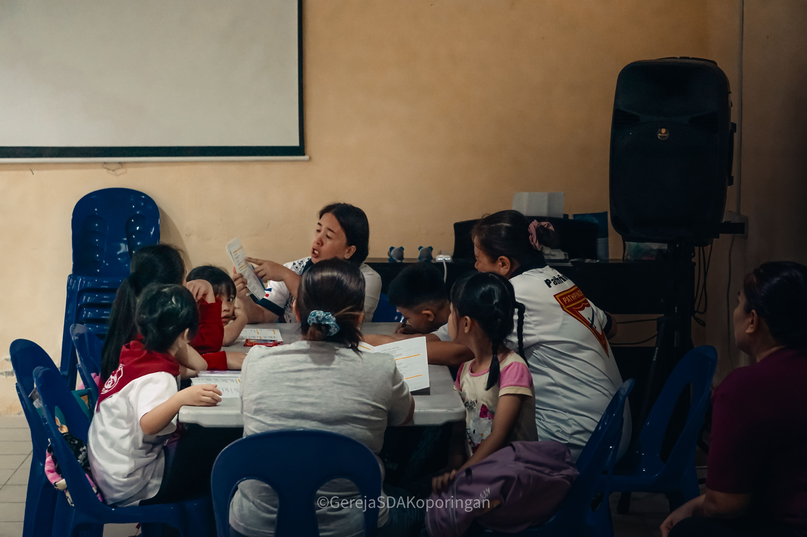
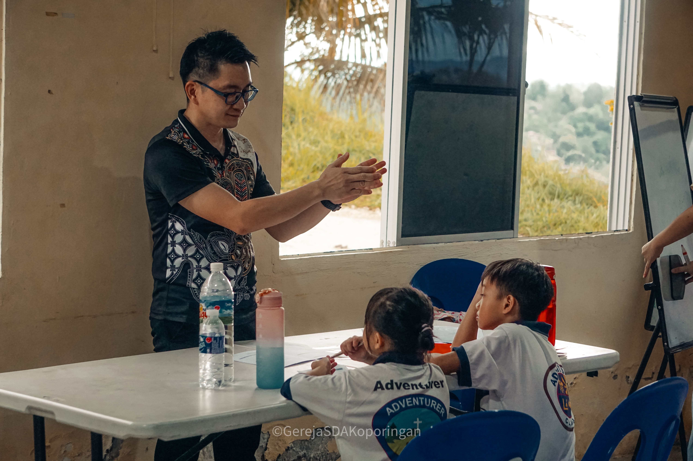
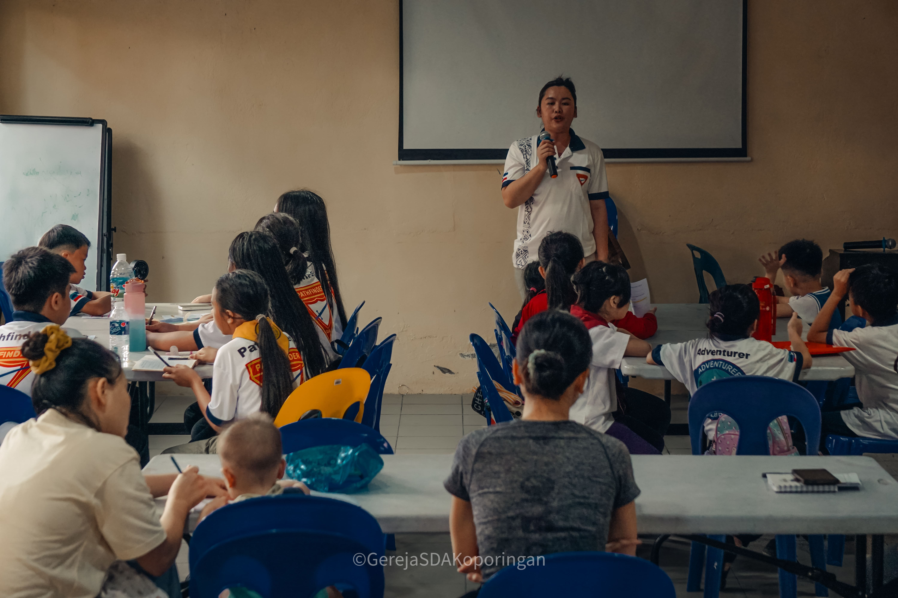
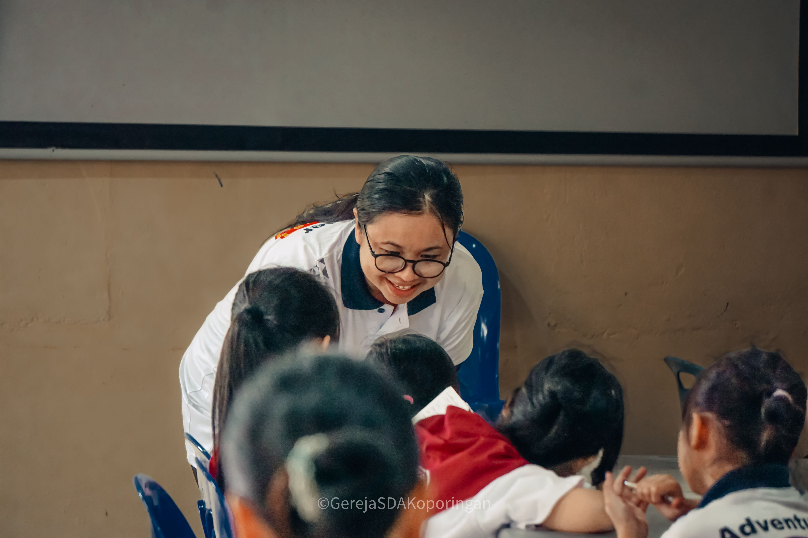
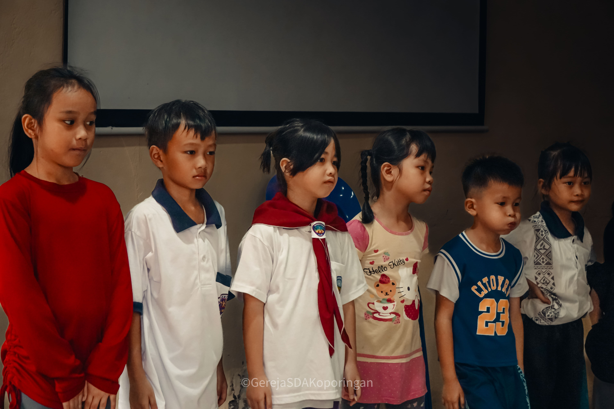
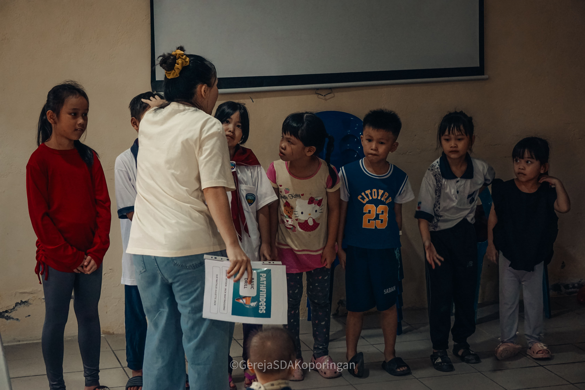
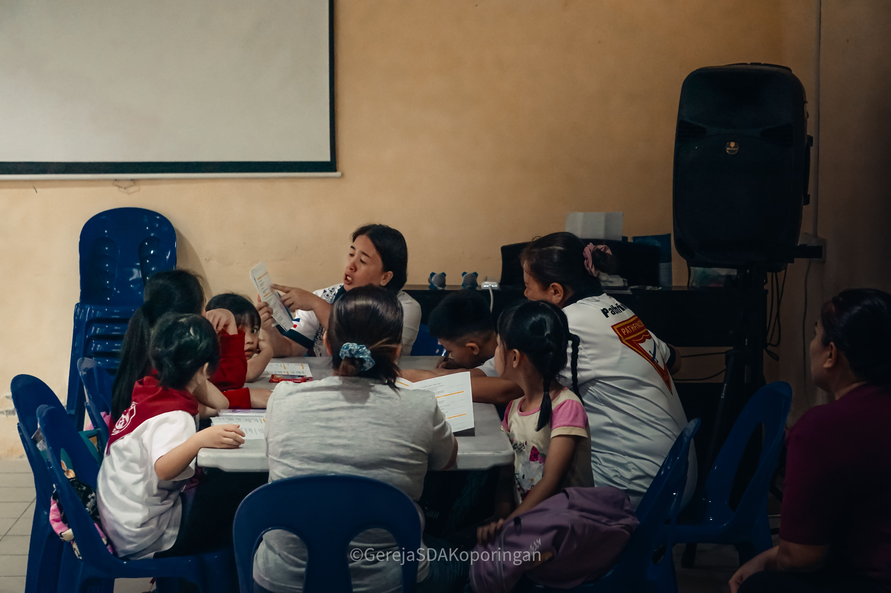
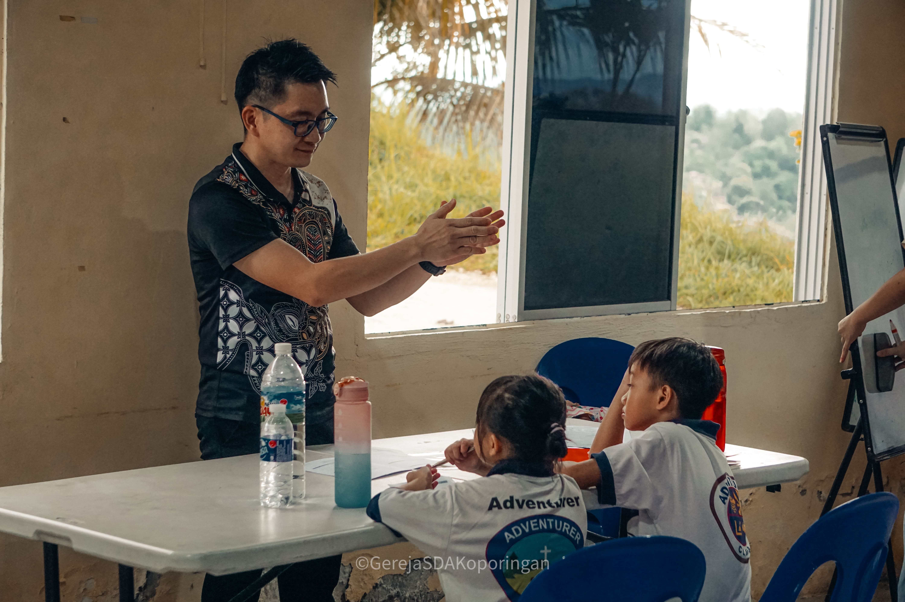